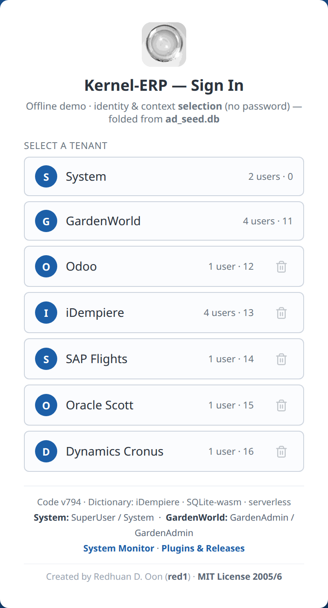
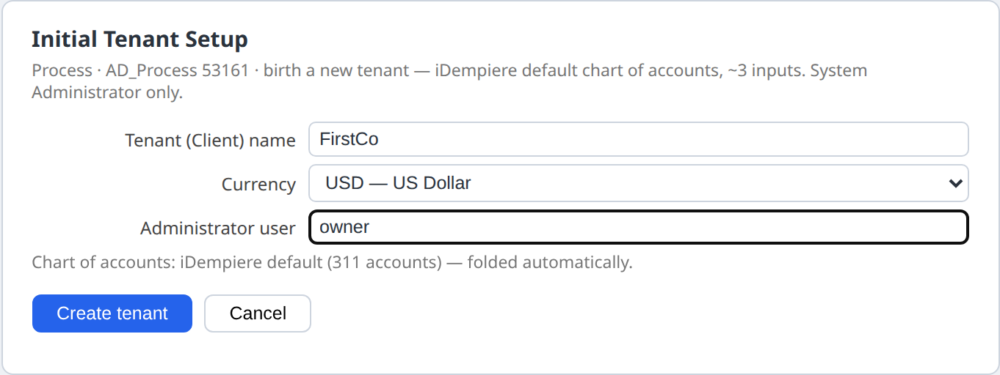
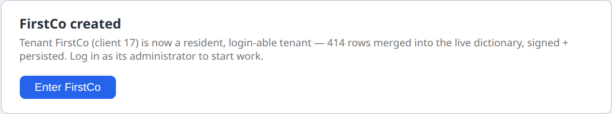
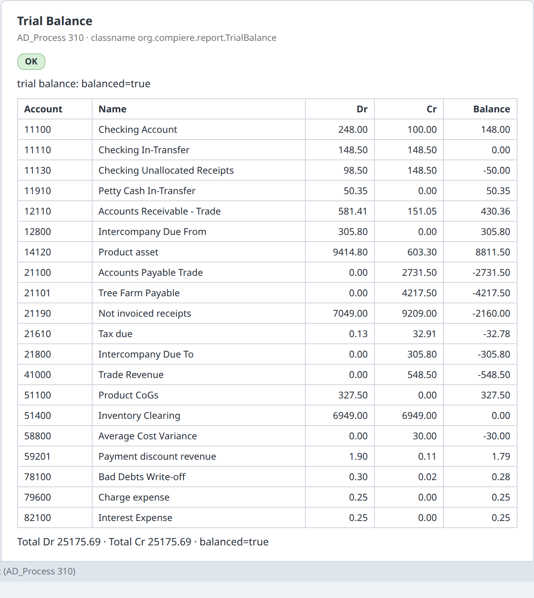

Kernel-ERP — Your First Setup (a new company, from scratch)¶
← Back to the User Guide · Kernel-ERP User Guide · Home
This page walks a first-time user through setting up a new company in the in-browser ERP, in the order an Odoo or iDempiere user would expect: open the app, create the company, add customers, vendors and products, enter a first sales order and purchase order, and look at the books.
🔒 Your data stays in your browser
There is no AI and no LLM in this app. Everything you type stays in your own browser's storage (IndexedDB) on your own device; nothing is uploaded to us. A few optional features that you start yourself (share links, QR codes, the update check) call a public service and send it only what that feature needs, never your data. The full wording is in the User Guide.
How this page was checked. Every step below was carried out by an automated test that drives the real app in a browser and reads back the values it produced: record counts, field values, status text and the app's own log lines. It is called W-ERP-FIRST-SETUP. The numbers quoted here come from its run of 3 October 2026 on the live build (v808). Where a step does not work yet, this page says so in a Not yet box rather than describing a workaround as if it were the product. In that run every step worked. The screenshots are illustrations captured from the same kind of run. They are not the evidence; the logged values are.
Words you will meet¶
| Term | What it means here | Odoo calls it | iDempiere calls it |
|---|---|---|---|
| Tenant | One company's complete, separate set of books and data. | Company / database | Tenant (formerly Client) |
| Organization | A branch or legal unit inside a tenant. * means "shared by all organizations". |
Branch / company in a multi-company setup | Organization |
| Role | What a user may see and do. The menu you see is cut down to your role's windows. | Access rights / groups | Role |
| Business Partner (BP) | Anyone you trade with. The same record can be a customer, a vendor, or both. | Contact | Business Partner |
| Document type | The kind of document, for example Standard Order or Purchase Order. It decides numbering and what happens when the document is completed. | Journal / operation type | Document Type |
| Complete | The action that turns a draft document into a finished one (status DR → CO). |
Confirm / Validate | DocAction Complete |
| Posting | The journal entries (debits and credits) that a completed document writes to the ledger. | Journal items | Accounting facts (Fact_Acct) |
| Chart of accounts | The list of ledger accounts. | Chart of accounts | Account Element |
| Accounting schema | Which currency and rules the books are kept in. A tenant can keep more than one set. | Fiscal localization / currency | Accounting Schema |
| Signed op-log | Every change is saved as a signed, chained entry, so it can be checked and replayed. | — | — (this ERP's own) |
Before you start¶
- Desktop browser recommended. Chrome, Edge or Firefox on a laptop or desktop.
- ⚠ First open downloads about 26 MB. The first time you open the ERP it fetches its data file,
ad_seed.db(27,193,344 bytes, about 25.9 MiB, measured). The file holds the full iDempiere dictionary and the demo companies. After that it is cached in your browser, so later visits start from the cache. On a metered connection, open it on Wi-Fi. - There is no password. The sign-in card says so: "identity & context selection (no password)". You choose who you are working as. This is a single-user, in-browser app. It is not a shared server with accounts.
Open the ERP: red1oon.github.io/bim-ootb/erp/idempiere.html (you can also reach it from the front door by choosing the ERP door).
Part A — Create your company¶
Step 1 · Open the app and look at the sign-in card¶
The card lists every tenant already installed. In the measured run there were 7: System, GardenWorld (iDempiere's classic demo company), and five companies migrated from other ERPs (Odoo, iDempiere, SAP Flights, Oracle Scott, Dynamics Cronus).

Signing in has three steps: tenant → user → role and organization. This is the same as iDempiere's login. (Verified: tenants=7; the third step shows ROLE, CLIENT and ORGANISATION.)
Step 2 · Sign in as the System Administrator¶
A new company is created by the system administrator, as it is in iDempiere.
- Tap System (the tenant).
- Tap System (the user).
- Leave the role as System Administrator and tap Log In ›.
Step 3 · Run Initial Tenant Setup¶
- In the menu on the left, open the folders and click Initial Tenant Setup. (This is iDempiere's Initial Client Setup, process 53161.)
- Fill in the fields:
- Tenant (Client) name, for example
FirstCo; - Currency: any active currency in the list (163 of them; USD is preselected);
- Country: the country of your company's address (249 countries; United States is preselected, as iDempiere's setup does for an English login);
- Administrator user, for example
owner; - Chart of accounts: iDempiere default (311 accounts), or Load your own file (see below).
- Tenant (Client) name, for example
- Click Create tenant.

The new company is created and installed in your browser. In the measured run it became client 17, with 530 rows written and saved. The setup wrote the company, its HQ organization (with an address in the country you chose), an administrator and a user role, a calendar for the current year with 12 monthly periods, the full 311-account iDempiere default chart of accounts, an accounting schema with its default and GL accounts, iDempiere's 42 standard document types with their 12 GL categories and number sequences, one warehouse with a locator and an address, a price list (Standard, valid from today) in which the sample product costs 1.00, a business partner group, one sample business partner Standard BP with an address, a tax category (Sales Tax for the United States, Standard otherwise) with one tax rate, one sample product in that category, the Immediate payment term and one sample sales invoice. Everything is in the currency you chose.

- Click Enter FirstCo. The sign-in card now lists your administrator (
owner). Pick it and log in. The new administrator's menu holds 534 entries.
(Verified on the live build, 3 October 2026, choosing MYR: client=17, rows=530, persisted=true, C_ElementValue=311, C_DocType=42, 12 periods Jan-26 … Dec-26, the accounting schema and the price list in MYR, one tax category used by the sample product, one payment term Immediate.)
Loading your own chart of accounts¶
Choose Chart of accounts → Load your own file and pick a CSV file in iDempiere's own format (the
layout of iDempiere's data/import/AccountingUS.csv: Value, Name, Description, Type, Sign, Document,
Summary, Default_Account, …). As in iDempiere:
- only lines with a Default_Account key are read; the same account value on several lines is one account serving several keys;
- the file must define every default account the accounting schema needs (53 keys in this
dictionary, for example
C_RECEIVABLE_ACCT). If one is missing, nothing is created and the form says which, e.g. "Account not defined: C_RECEIVABLE_ACCT".
(Verified: a file holding the 53 lines of iDempiere's AccountingUS.csv that carry the 53 required keys
made a second company with 53 accounts, each required key wired to the file's account (0 wrong); the
same file without its C_RECEIVABLE_ACCT line was refused with that message and created no company.)
Sales Order → New in your own company offers its 7 sales document types (Standard Order, POS Order,
Prepay Order and the others). (Verified: targetDocTypeOptions=7, none from another company.)
Part B — Set up your master data (customers, vendors, products)¶
Log in as your new administrator (owner). Each window below opens from the menu, or straight from a
link such as idempiere.html?login=owner&window=123.
Step 4 · Create a customer¶
- Open Business Partner (window 123) and click New record on the toolbar.
- Organization: pick your company's HQ, or
*to share the record across organizations. - Search Key: e.g.
C-001. Name: e.g.Acme Retail Sdn Bhd. - Business Partner Group: pick Standard, the group the setup created for your company.
- Tick Customer and click Save on the toolbar.
(Verified: §CRUD validate key=c_bpartner verb=create ok, then §CRUD-PERSIST. The list went from 1
record (the sample partner the setup made) to 2. Each save is a signed entry in your browser and is still
there after a reload.)
Your company's HQ is in the Organization list, and the records the setup created show in their own
windows: Price List, Calendar and Warehouse 1 record each, Business Partner 3 (the sample plus the two you
make). (Verified on the live build since 2 October 2026: inOrgPicker=true,
gridRecords={"PriceList":1,"Calendar":1,"Warehouse":1,"BPartner":3}.)
Step 5 · Create a vendor¶
Same window and steps as Step 4, with Vendor ticked instead of Customer, e.g. V-001
Kedai Bekalan Sdn Bhd. (Verified: verb=create ok, persisted. The list then shows each record once,
3 in all, the same as after a reload.)
Step 6 · Products, prices, tax and payment terms¶
- Warehouse: the setup made one, HQ Warehouse, with one locator. It shows in Warehouse and Locators (window 139). (Verified: 1 record.)
- Product (window 140) needs a Tax Category. The setup created one (Sales Tax for a United States company), and it is the only one offered in your company. (Verified: 1 tax category, the sample product uses it.)
- Payment terms: the setup created Immediate (0 days, the default), as iDempiere's setup does. (Verified.)
The drop-down lists on a new record show only your own company's records and shared * records, as
in iDempiere. (Verified on the live build since 2 October 2026: in the new company's Sales Order →
New, the Business Partner list offers 3 entries, 0 from another company; before the fix it offered 45,
42 of them other companies'.)
Step 6a · Give your customer an address¶
A sales order needs the customer's address, as in iDempiere (without one the order is refused: BPartnerNoShipToAddress).
- In Business Partner, select your customer (e.g.
Acme Retail Sdn Bhd) and open the Location tab. Click New record. - Next to Address, click Address…. Fill in Address 1, City, Postal and pick the Country (and the Region if the country uses regions). Click OK. The address is saved at once, as iDempiere's address dialog does.
- Click Save. The location is named after the city.
(Verified: before the address, a sales order for this customer was refused; the address saved as typed
— Jalan Ampang 1, Kuala Lumpur, 50450, Malaysia; the location got the name Kuala Lumpur; afterwards
the order header saved with that location filled in.)
Step 6b · A first sales order in your own company¶
iDempiere's setup makes the price list Standard a purchase price list. Make it usable for sales once:
- Open Price List (window 146), select Standard, tick Sales Price list and Save.
- Open Sales Order (window 143), New record. The Price List is already Standard (your company's default). Business Partner: Standard BP; Target Document Type: Standard Order. Save.
- On Order Line, New record, Product: Standard Product, Quantity
2. The price (1.00), the UOM (Each) and the tax fill in. Save, then go back to the order and Complete.
(Verified on the live build, 3 October 2026: price 1, UOM 100 and the company's own tax, each equal to an
independent lookup; priced from your company's own price list; Complete → to=CO verifyChain=ok.)
Part C — A sales order in the demo company¶
The demo company GardenWorld has many products, prices and partners, so the rest of this walk-through
uses it. Sign in as GardenAdmin, or open idempiere.html?login=GardenAdmin&window=143.
Step 7 · Enter the order header¶
- Open Sales Order (window 143) and click New record.
- Business Partner: e.g. Joe Block. Choosing it fills Invoice Partner and Price List
automatically (
CalloutOrder.bPartner, logged). - Target Document Type: Standard Order.
- Click Save. (Verified:
§CRUD validate key=c_order verb=create ok.)
Step 8 · Add a line¶
- Open the Order Line tab and click New record. You do not have to click Save on the header first: as in
iDempiere, moving to another tab saves the record you were typing. If a required field is still empty, the header is
not saved and you stay on it, with the field marked. The Order Line tab only ever lists the lines of the order you
are on, including lines added during this session to other orders.
(Verified 4 October 2026: an order typed and left unsaved is saved when the Line tab is clicked
(
§GT-NAV autosave … verdict=saved). The second order's Line tab shows 0 rows before its line is added and 1 row after, and that row belongs to this order, even though an earlier order got a line in the same session.) - Product: e.g. Oak Tree. Choosing it fills the Price from the order's price list (
61.75), the UOM (Each) and the Tax (Standard), as iDempiere does. Quantity:2. Line Net Amount becomes 123.50. (Verified on the live build since 2 October 2026: price 61.75, UOM 100, tax 104, each equal to an independent lookup of the price list, product and tax rules. A product with no price in that price list fills no price, rather than a guessed one.) - Click Save. (Verified:
§CRUD validate key=c_orderline verb=create ok.)
Step 9 · Complete the order¶
- Go back to the Order tab. Your order is still the selected record, so there is nothing to look up in the list.
- The form shows the actions that are allowed now: Complete · Prepare · Void. Click Complete.
The status becomes Completed (CO). The change is stored as a signed entry, and the chain check
passes (§CRUD process committed … to=CO verifyChain=ok). Reload the page and it is still CO.
(Verified: after a reload, the order's status reads CO.)
What Complete creates depends on the document type, exactly as in iDempiere. A Standard Order creates nothing else on Complete: its shipment and invoice come later (iDempiere's Generate Shipments / Generate Invoices). A POS Order, Warehouse Order or Credit Order creates its shipment on Complete, and a POS or Credit Order also its invoice. (Verified on the live build since 2 October 2026, on orders typed in the session: Standard Order → 0 new documents; POS Order with one line → a shipment and an invoice, each with one line, signed in the same step.)
Those documents are full documents you can open (Shipment (Customer), Invoice (Customer)): customer, document type, lines, prices and totals are copied from the order. They are then posted to the books, the way iDempiere's accounting processor posts completed documents: the invoice debits Accounts Receivable and credits Revenue (and Tax Due when there is tax); the shipment debits Cost of Goods Sold and credits Product Asset at the product's current average cost. (Verified on the live build, 3 October 2026: POS Order, 1 × Oak Tree at 61.75 → invoice total 61.75, journal DR 61.75 / CR 61.75 on the Receivable and Revenue accounts; shipment journal DR 51.45 / CR 51.45 on COGS and Asset, 51.45 being the product's average cost in iDempiere; each account equal to an independent lookup; both marked Posted.)
Part D — Your first purchase order (demo company)¶
Same steps as Part C, in Purchase Order (window 181): vendor e.g. Tree Farm Inc., document type
Purchase Order, line tab PO Line (e.g. Elm Tree × 5 at 40.00), then Complete.
(Verified: header and line saved, to=CO verifyChain=ok.) Like a Standard Order, a standard Purchase
Order creates no receipt or vendor invoice on Complete (verified: 0 new documents); the receipt is entered
separately.
Part E — Look at the books¶
Step 10 · See the journal a document posts¶
Open Sales Invoice (window 167) in GardenWorld. On a record, click the Posted button (the
book icon in the Posted column). It opens the journal that the invoice posts, or would post if it is
not posted yet. (Verified on invoice 109: §PREVIEW-LIVE … coverage=complete balanced=true.)
Step 11 · Run the Trial Balance¶
- Open the Trial Balance report from the menu (or
idempiere.html?login=GardenAdmin&process=310). - Accounting Schema is required. Pick it from the list, which shows your company's schemas only: choose GardenWorld US/A/US Dollar (id 101, GardenWorld's US-dollar schema). Leave the other fields empty.
- Click Run.

The report shows your company's postings in the schema you picked only. (Verified on the live build since 2 October 2026: the list offers GardenWorld's 2 schemas and none of another company's; GardenWorld, schema 101 → 20 accounts, debits = credits = 25,175.69, equal to an independent sum over the same postings.)
Step 11b · Aging: who owes you, and since when¶
- Open Aging from the menu (or
idempiere.html?login=GardenAdmin&process=238). - Leave Sales Transaction = Y for customers (N for vendors). Statement Date empty means today.
- Click Run. The report lists, per customer and currency, the open amount split into not yet due and past due 1-7 / 8-30 / 31-60 / 61-90 / 91+ days, with a total per currency.
(Verified on the live build, 3 October 2026, GardenWorld: today, 389.97 open, all past due 91+ days;
with Statement Date 2003-11-15, 114.42 not yet due, 114.43 past due 8-30 days and 161.12 past due 91+
days — each equal to an independent calculation over the open invoices, and the open items are the same
as iDempiere's own RV_OpenItem view lists for the same data. Aging with Account Date or with
currency conversion is not offered yet; the form says so if you set them.)
Part F — Bring data in, keep it safe¶
Step 12 · Bring your existing ERP data in¶
Open Help → Run it yourself (DIY). It offers small download bundles ("agents") for Odoo, iDempiere, SAP, Oracle and Dynamics. You run an agent on the machine that holds your ERP. It writes one file, which you then load back into this ERP. The bundle's README has the exact commands. (Verified: the DIY tab lists odoo_agent.zip and the five systems.)
Import business partners from a spreadsheet (iDempiere's import loader)¶
- Save your list as CSV. With iDempiere's sample format Example BPartner the columns are: Key (used as Search Key and Name), Contact Name, Street, City, State, Zip, Phone; the country is fixed to US by the format.
- Open Import File Loader from the menu, pick the format Example BPartner, choose your file, check the preview and click Save. The rows land in Import Business Partner (window 172).
- Run Import Business Partners (process 194) with your company as Tenant. Each row becomes a business partner with its address and contact; rows with a problem stay in window 172 with the reason.
(Verified on the live build, 3 October 2026: a 3-line CSV (one name containing a comma) → 3 rows loaded → 3 business partners, 3 addresses, 3 contacts, 0 errors, each equal to the CSV; running the import again imports nothing.)
Step 13 · Where your work is kept, and backups¶
- Everything you save is kept in this browser's storage. It is still there after a reload (verified in Step 9). It does not follow you to another browser or device.
- Clearing your browser's site data for the app deletes it.
Back up: open Help → Run it yourself (DIY) and click Backup (signed). You get a file
(erp-backup-….json) that holds every change you saved, signed with your browser's key. Keep it
somewhere safe.
Restore: same place, Restore…, choose the file, confirm. The file is checked first: if anything in it was changed, it is refused and nothing is replaced. Otherwise your work comes back, and stays after a reload.
(Verified on the live build, 3 October 2026: backup of 47 saved changes → browser storage wiped (0) → a copy with one change altered was refused → the real file restored all 47, the same chain tip and the same business partners, also after a reload.)
The whole checklist at a glance¶
| # | Step | Today |
|---|---|---|
| 1 | Open the app (26 MB first download) | ✅ |
| 2 | Tenant → user → role/organization sign-in | ✅ |
| 3 | Create a new company (Initial Tenant Setup) | ✅ |
| 4 | Choose the company currency | ✅ 163 currencies |
| 5 | Default chart of accounts (311 accounts) | ✅ |
| 5b | Your own chart of accounts from a file | ✅ |
| 6 | Current-year calendar with 12 periods | ✅ |
| 7 | Document types for orders, shipments, invoices, payments | ✅ 42 types |
| 8 | Your HQ is offered on new records | ✅ |
| 9 | Setup records visible in their own windows | ✅ |
| 10–11 | Create a customer and a vendor | ✅ |
| 10b | Customer address (Location editor); order for that customer | ✅ |
| 11b | List shows each new record once | ✅ |
| 12 | Product with your own tax category | ✅ |
| 13 | Payment terms | ✅ Immediate |
| 14 | Lists show only your company's records | ✅ |
| 15 | Sales order document types in your new company | ✅ 7 offered |
| 15b | Sales order in your new company: line prices, Complete | ✅ |
| 16 | Sales order header (demo company) | ✅ |
| 17 | Product fills price / UOM / tax | ✅ |
| 18 | Order line saves | ✅ |
| 19 | Complete the order | ✅ signed |
| 20 | Complete creates shipment / invoice (by document type) | ✅ |
| 20b | Those documents are readable and posted (journal) | ✅ |
| 21 | Completed order survives reload | ✅ |
| 22 | Purchase order, entered and completed | ✅ |
| 23 | See a document's journal (Posted button) | ✅ |
| 24 | Trial Balance correct for my company and schema | ✅ |
| 24b | Schema chosen from a list | ✅ |
| 24c | Aging report | ✅ |
| 25 | Bring data in (DIY agents) | ✅ |
| 25b | Spreadsheet import (Import File Loader → Import Business Partner) | ✅ |
| 26 | Backup / restore on this page | ✅ |
Count from the measured run on the live build (3 October 2026, build v808): 34 working, 0 not yet, 0 inconclusive, 0 page errors. Steps 16–24c were measured in the demo company GardenWorld; steps 3–15b in the new company.
Where the gaps are tracked¶
Every Not yet this page used to carry was written up as a product item with its evidence, a specified fix
and the test that proves it, and is now closed (prompts/ERP_FIRST_SETUP_GUIDE.md §FS2j–§FS2p, §FS3.3, in
the project repository). The limits that remain are named where they apply (Aging with Account Date or
currency conversion; the iDempiere import-loader formats beyond the ones in the dictionary). The step-by-step checklist with the Odoo and iDempiere references for each step is
in prompts/ERP_FIRST_SETUP_GUIDE.md.
For developers: re-run the check yourself. From a bim-ootb checkout, run
cd erp && node tests/poc_erp_first_setup_live.js, then read tests/poc_erp_first_setup_live.log.
It prints one §FIRST-SETUP line per step and ends in PASS only if every step still matches the
checklist, so a fixed gap and a broken step both show up.
Odoo and iDempiere references used for the "what you would expect" column: Odoo 17 documentation (companies, chart of accounts, payment terms, import/export); iDempiere wiki (Initial Client Setup, Sales Order, Business Partner, Trial Balance).